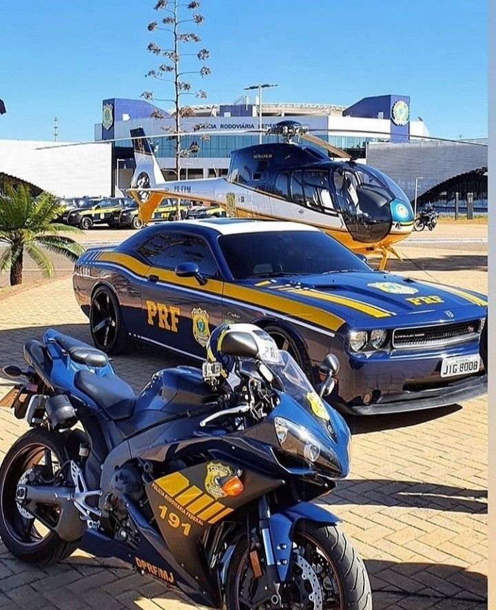
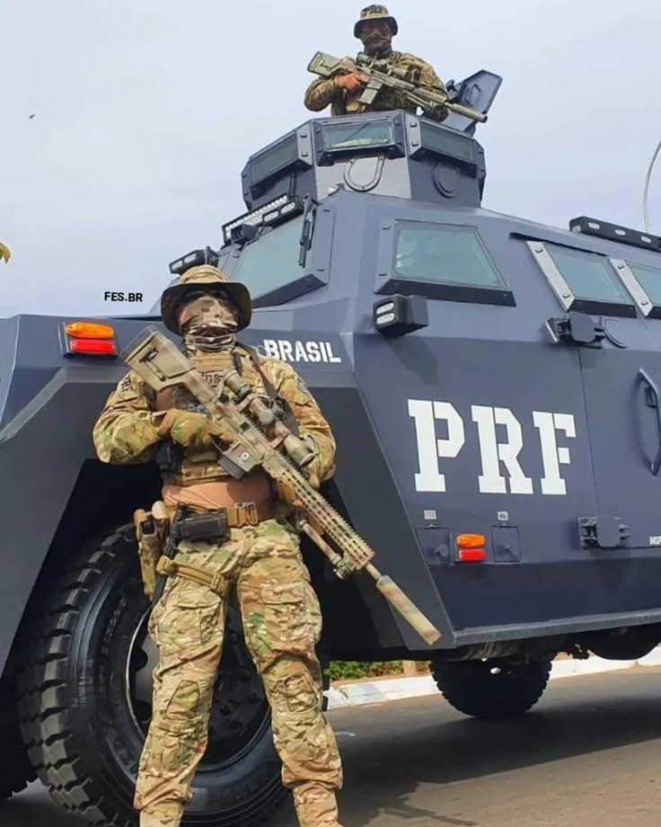
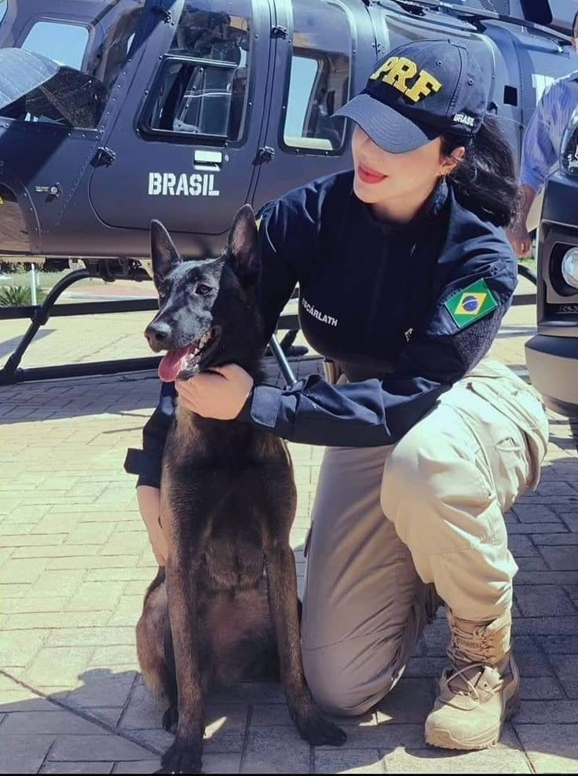

Sobre a Polícia Rodoviária Federal
A Polícia Rodoviária Federal (PRF) é a força policial federal responsável pela fiscalização e policiamento ostensivo das rodovias federais do Brasil. Sua principal função é garantir a segurança do trânsito e combater crimes como tráfico de drogas, armas e contrabando que utilizam essas vias. A PRF também possui o Grupo de Resposta Rápida (GRR), equipes com treinamento tático para lidar com situações de alto risco em rodovias, como abordagens perigosas e apoio em grandes operações contra o crime organizado.
Requisitos para Ingresso :
- 📌 Curso superior completo (qualquer área);
- 🚗 Carteira de habilitação categoria B;
- 📝 Aprovação em concurso público federal;
- 🏃 Teste de aptidão física, exames médicos e psicológicos;
- 🎓 Curso de formação da PRF.



